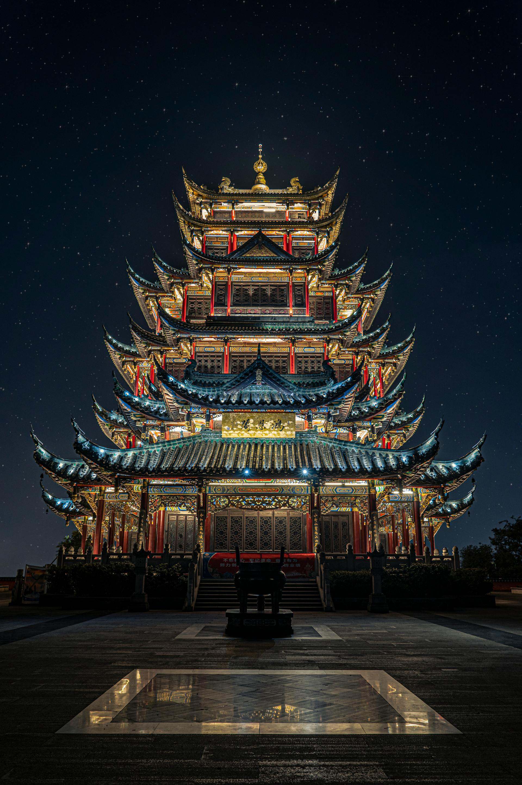
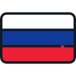
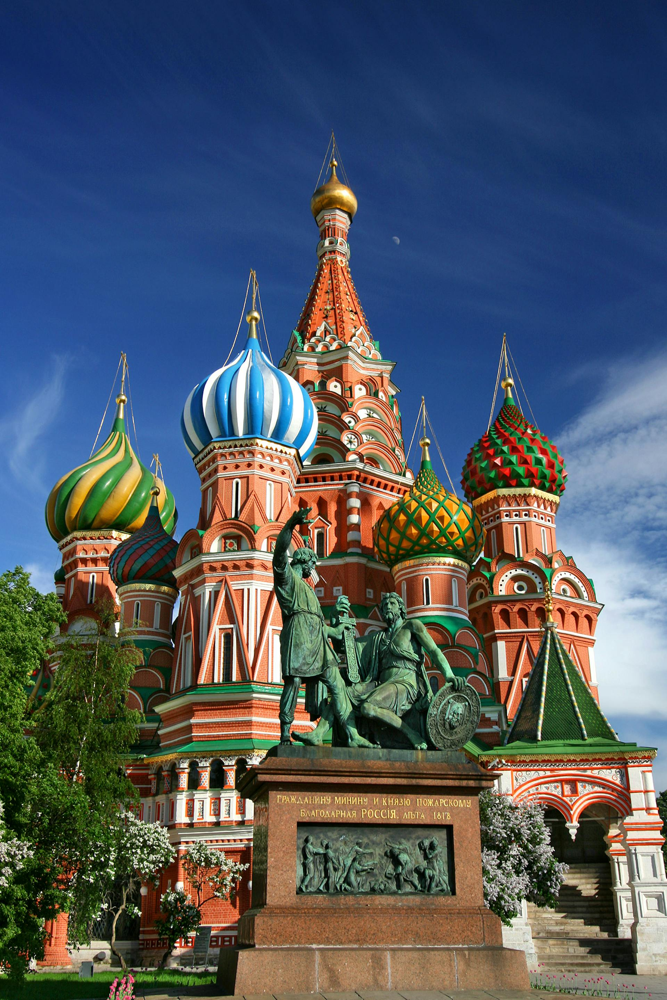

MOST POWERFUL COUNTRIES.
The world’s most powerful countries are the ones that consistently dominate news headlines, preoccupy policymakers and shape global economic patterns. Their foreign policies and military budgets are tracked rigourously. When they do a promise, they generally keep it. These countries maintains their influence around the globe
List of the top 5 most powerful countries around the world.
United States of America (USA)
HIGHLIGHTS
- GDP: $27.4 trillion
- Population: 335 million
- GDP PPP: $81,695
- President: Donald Trump
- Capital: Washington, DC
- Region: North America
The United States of America is the world's most dominant economic and military power.Likewise, it had made a huge cultural impact upon the world through its art,music,movie industry (Hollywood) and television shows.
The U.S. is a constitutional-based federal republic composed of 50 states. It's economy is the world’s largest in terms of gross domestic product, and also the most technologically advanced in terms of science & tech.
It has significant natural resources: It is the world’s leading producer of both oil and natural gas, and has the world’s largest coal reserves.The country is home to some of the top universities in the world, including Harvard University, MIT and Caltech.
The country also has theost powerful and technologically advance military in the world.Its is also home to top multinational companies such as Apple, Microsoft,Google,Amazon,Meta and Various others which possess a global influence on governments around the world.
Despite being a dominant global power, the U.S. still faces domestic challenges, including racial tensions, income inequality and an increasingly polarized electorate. National security is a concern, as is the debt incurred from wars and expenditures on an aging population. The U.S. leads the developed world in deaths due to firearms.
The U.S. exerts major influence over various International organizations, and also was the founding force behind institutions such as the United Nations, NATO and the World Bank.
China
HIGHLIGHTS
- GDP: $17.8 trillion
- Population: 1.41 billion
- GDP PPP: $24,558
- President: Xi Jingping
- Capital: Beijing
- Region: East Asia
China is home to one of the world’s most ancient civilisation China has been ruled by the Communist Party since 1949, when the nation was established as the People’s Republic of China. China is the most most populous country in the world and is also the 2nd largest country by land mass.Official languahe of the country is Mandarin Chinese.
China has been one of the world’s fastest-growing major economies and a single-party socialist state ruled & governed by Chinese Communist party as people's republic of china.It is one of the fastest growing economy in the world which has became a manufacturing hub of for the world.China is very capable of manufacturing goods in various sectors like electronics ,clothing & textiles goods,machinery,chemicals,steel etc
The nation’s rapid rise in global influence also has led to challenges abroad. China has come under frequent criticism for its human rights policies. Political freedom remains tightly controlled, and China has some of the world’s tightest restrictions on Internet usage. China regularly ranks near the bottom of international rankings for media freedom.
It is recognized as possessing nuclear weapons. It has been a permanent member of the United Nations Security Council since 1971 and is a member of several international and regional organizations, including the World Trade Organization and the Asia-Pacific Economic Cooperation.
Russia
HIGHLIGHTS
- GDP: $2.02 trillion
- Population: 144 million
- GDP PPP: $44,104
- President: Vladimir Putin
- Capital: Moscow
- Region: Asia
Russia is the world’s largest country by land area, it extends 11 time-zones and also covers all of northern Asia and much of Eastern Europe.
Russia is generally considered a great power and is a regional power, possessing the largest stockpile of nuclear weapons and having the third-highest military expenditure in the world.It has a high-income economy, which is the eleventh-largest in the world by nominal GDP and fourth-largest by PPP, relying on its vast mineral and energy resources; which rank as the second-largest in the world for oil and natural gas production. However, Russia ranks very low in international measurements of democracy, human rights and freedom of the press, and also has high levels of perceived corruption. It is a permanent member of the United Nations Security Council
Since the turn of the century, Russia's political system has been dominated by Vladimir Putin, under whom the country has experienced democratic backsliding and become an authoritarian dictatorship. Russia has been militarily involved in a number of conflicts in former Soviet states and other countries, including its war with Georgia in 2008 and its war with Ukraine since 2014. The latter has involved the internationally unrecognised annexations of Ukrainian territory, including Crimea in 2014 and four other regions in 2022, during an ongoing invasion.

United Kingdom

HIGHLIGHTS
- GDP: $3.34 trillion
- Population: 68.4 million
- GDP PPP: $58,906
- Prime Minister: keir Starmer
- Capital: London
- Region: Europe
The United Kingdom is a highly developed nation that exerts considerable international economic, political, scientific and cultural influence.
The UK became the first industrialised country and was the world's foremost power for the majority of the 19th and early 20th centuries, particularly during the Pax Britannica between 1815 and 1914. The British Empire was the leading economic power for most of the 19th century, a position supported by its agricultural prosperity, its role as a dominant trading nation, a massive industrial capacity, significant technological achievements, and the rise of 19th-century London as the world's principal financial centre. At its height in the 1920s, the British Empire encompassed almost a quarter of the world's landmass and population, and was the largest empire in history. However, its involvement in the First World War and the Second World War damaged Britain's economic power and a global wave of decolonisation led to the independence of most British colonies.
A developed country with an advanced economy, the UK ranks amongst the largest economies by nominal GDP, and is one of the world's largest exporters and importers. It is a nuclear state with one of the world's highest military budgets. Its soft power influence can be observed in the legal and political systems of many of its former colonies, and British culture remains globally influential, particularly in language, literature, music and sport. English is the world's most widely spoken language and the third-most spoken native language. The country is part of multiple international organisations and forums.

Germany

HIGHLIGHTS
- GDP: $4.46 trillion
- Population: 84.5 million
- GDP PPP: $69,338
- Chancellor: Olaf Scholz
- Capital: Berlin
- Region: Europe
Germany, the most populous nation in the European Union, possesses one of the largest economies in the world and has seen its role in the international community grow steadily since reunification.
Germany is a developed country with a strong economy; it has the largest economy in Europe by nominal GDP. As a major force in several industrial, scientific and technological sectors, it is both the world's third-largest exporter and importer. It offers social security, a universal health care system, and tuition-free university education. Germany is part of multiple international organisations and forums. It has the third-highest number of UNESCO World Heritage Sites: 54, of which 51 are cultural.